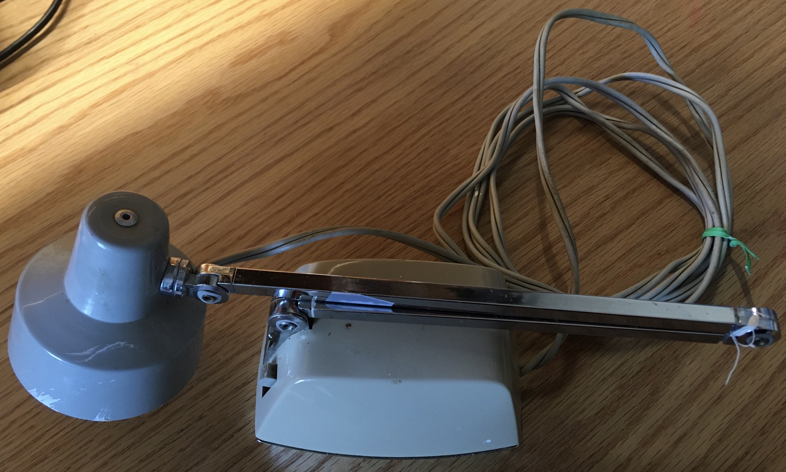
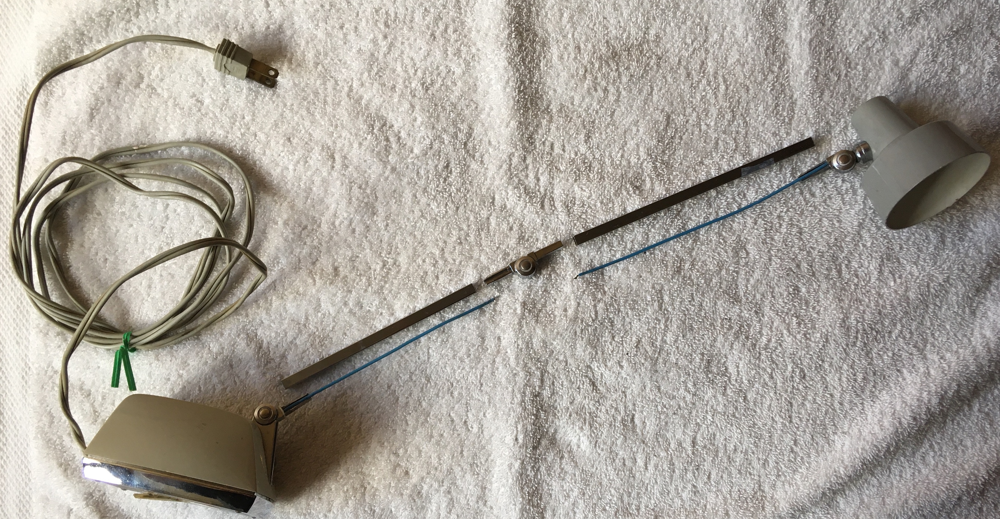
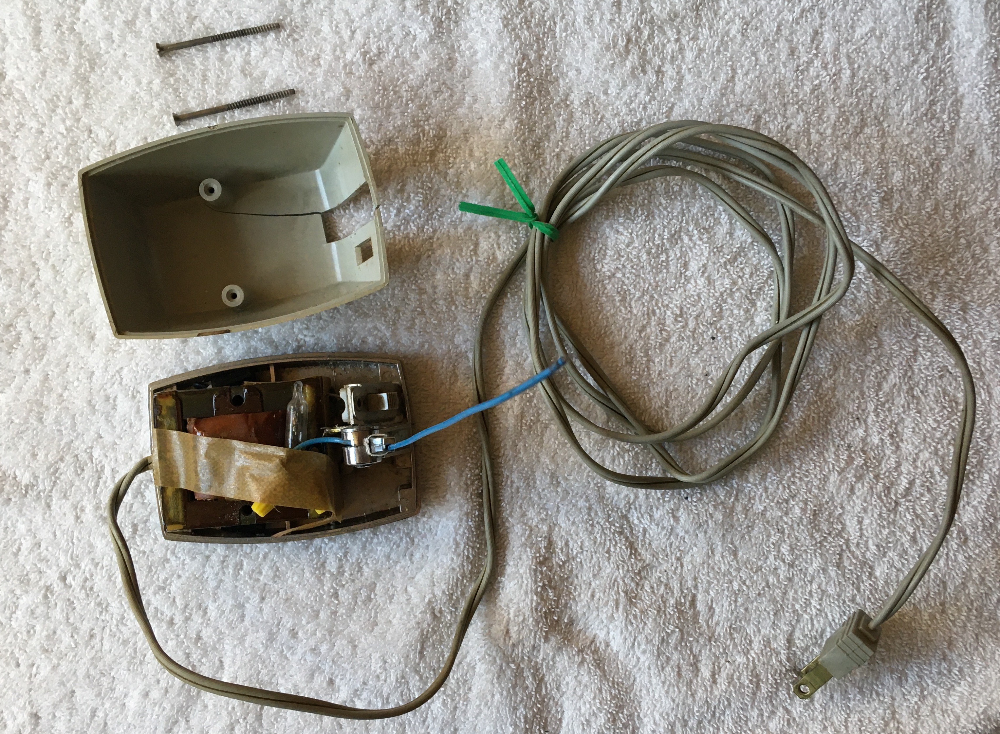
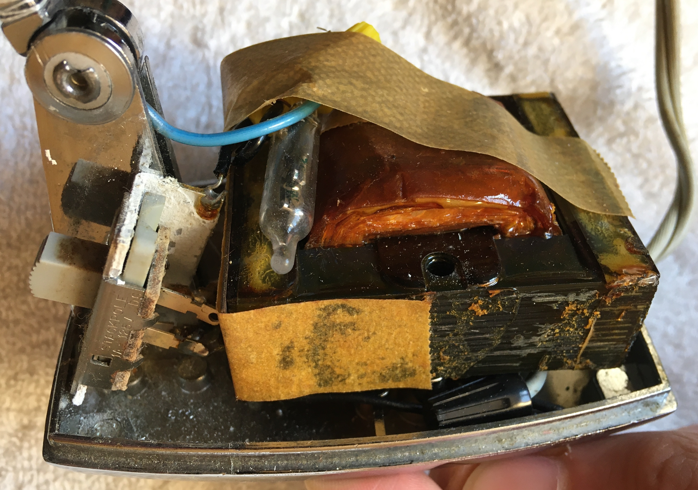
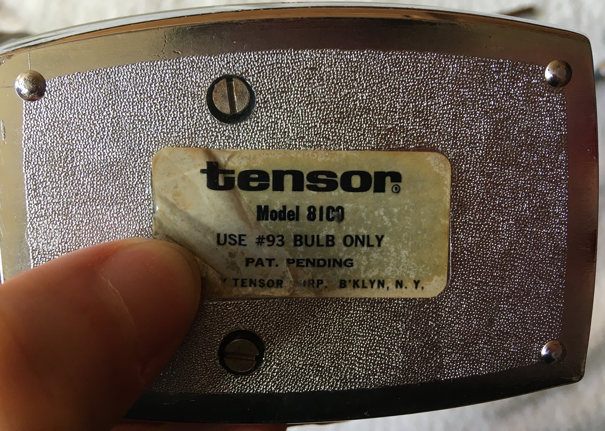

Introduction
The Model 8100 Tensor Desk Lamp was another device given to me by my grandma to be repaired. My grandma had used the small desk lamp for her studies in highschool during the early 1950s. Over time, the joints in the lamp arm had loosened. As a result, the lamp could only be positioned closely to its base where the moment arm of the lamp was smallest. When the lamp was repositioned to stretch out from its base, the lamp failed to sustain its position and would fall over. My grandma asked me if there was any way I could fix it.
Unfortunately, this story is one of failure. Not only did I fail to fix it, but I also rendered the device inoperable by accidentally splitting the wire supplying power to the lightbulb. Nonetheless, the old lamp made for an interesting teardown and I was forgiven by my grandma.
Original Lamp
Exploded Lamp Arm
Failed Repair
As I mentioned, the problem with this lamp was that the joints had loosened such that the lamp could no longer maintain an upright position. Unfortunately, all the lamp joints were riveted in place preventing any tightening of the joints. Had the joints been bolted connections instead, the repair might have been as simple as just tightening down each connection with a screwdriver. Nonetheless, I tried to tighten the riveted joints by compressing each one, hoping to flare out more of the shank to grip the joint together. Still the lamp fell over when extended.
Taking a new approach, I decided to disassemble the lamp arm in search of another way I could tighten the joints. After a gentle tug at one of the connections, the wire leading up from the base to the lightbulb tore clean apart. Mortified, I attempted to reroute the wire through the lamp arm, expose the wire ends, and then braid the wire ends together before resoldering the connection. The poor wire, weak with age, fell apart in my hands. I told my grandma what had happened and that it could still be fixed if I replaced the old wire with a new one, but she said not to worry about it. And so the teardown began.
Lamp Base
The base of the lamp consisted of a step down transformer, switch, and a small glass encapsulation of wire which may have been a fuse. Of these components, my interest was drawn most to the transformer. Compared to the clean stainless steel exterior of the modern step down transformer in the subwoofer speaker I tore down, this transformer presented altogether differently. Not only had the components of this transformer degraded with age, the scattered pieces of tape and heavy application of lacquer over the iron plates seemed seriously jank. Seeing all the transformer components exposed like this, I was interested to learn more about how transformers function. A few Youtube videos later (I found this video particularly helpful), I learned some basics of transformer design.
Disassembled Base
Fundamentally, transformers are circuit components used to raise or lower AC voltage in a circuit using a pair of inductors (coils of wire). Alternating current moving through one inductor generates an alternating magnetic field and thus an induced electromotive force (EMF) on the other inductor, driving a flow of alternating current. If the first inductor has more coils than the second inductor, more current moves through the second inductor and thus it also has a lower voltage. Since the output voltage by this kind of transformer would be lower than the input voltage, it is said to be a step down transformer. If instead the output voltage was greater than the input voltage, it would be called a step up transformer.
To strengthen and guide the magnetic field from the first inductor through the second inductor, an iron core is used. This iron core along with the copper wire windings of the inductors contributes to transformers often appearing as hefty blocks. Due to inefficiences in the transfer process such as eddy currents that are generated in the iron core by the inductors' magnetic field, transformers can dissipate a significant amount of electrical energy as heat. To reduce the eddy currents in the iron core and thus reduce the likelihood of the transformer overheating, the iron core is formed using many thin plates held together by lacquer.
Transformer
Examining the wires contained inside the lamp base, it was interesting to note how electrical connections were made. Only wire connections with other components were soldered, while wire-to-wire connections were made with the use of twist-on wire connectors. Soldering wire connections likely requires a trained and skilled assembly person, while installing twist-on wire connectors is straightforward and easy for anyone to learn. Therefore, by limiting soldering to where only necessary, these lamps could be manufactured at faster rates.
Soldered Connections at Switch
Twist-On Wire Connectors
Historical Note
The lightbulb used on this lamp was labelled "G.E. 93" and according to the label on the bottom of the lamp the No. 93 was the only type of lightbulb that should be used with the lamp. Based on information provided in a small electronics repair book (Repairing Small Electrical Applicances, Robert Hertzberg, 1968) my grandma gave me, the G.E. (General Electric) 93 was originally an automotive lightbulb transistioned to use in desk lamps given its small size and high intensity. Among desk lamps, which first became popular around mid-20th century, the G.E. 93 was the most commonly used lightbulb at the time the book was written.
Base Label